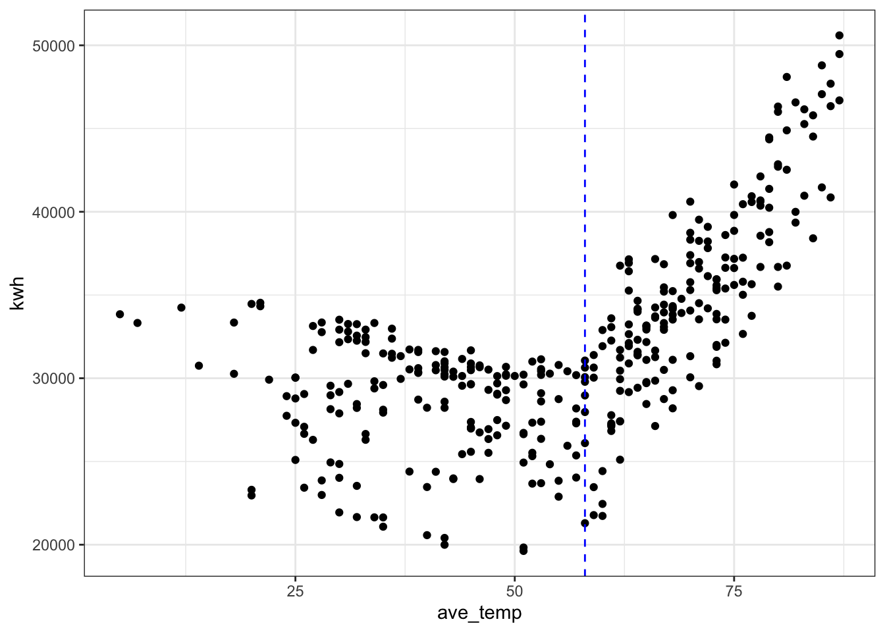

Main Meter - Simple linear regression
Maggie Douglas
2026-03-20
Last updated: 2026-03-20
Checks: 6 1
Knit directory: dickinson_power/
This reproducible R Markdown analysis was created with workflowr (version 1.7.2). The Checks tab describes the reproducibility checks that were applied when the results were created. The Past versions tab lists the development history.
The R Markdown is untracked by Git. To know which version of the R
Markdown file created these results, you’ll want to first commit it to
the Git repo. If you’re still working on the analysis, you can ignore
this warning. When you’re finished, you can run
wflow_publish to commit the R Markdown file and build the
HTML.
Great job! The global environment was empty. Objects defined in the global environment can affect the analysis in your R Markdown file in unknown ways. For reproduciblity it’s best to always run the code in an empty environment.
The command set.seed(20260107) was run prior to running
the code in the R Markdown file. Setting a seed ensures that any results
that rely on randomness, e.g. subsampling or permutations, are
reproducible.
Great job! Recording the operating system, R version, and package versions is critical for reproducibility.
Nice! There were no cached chunks for this analysis, so you can be confident that you successfully produced the results during this run.
Great job! Using relative paths to the files within your workflowr project makes it easier to run your code on other machines.
Great! You are using Git for version control. Tracking code development and connecting the code version to the results is critical for reproducibility.
The results in this page were generated with repository version 93a9960. See the Past versions tab to see a history of the changes made to the R Markdown and HTML files.
Note that you need to be careful to ensure that all relevant files for
the analysis have been committed to Git prior to generating the results
(you can use wflow_publish or
wflow_git_commit). workflowr only checks the R Markdown
file, but you know if there are other scripts or data files that it
depends on. Below is the status of the Git repository when the results
were generated:
Ignored files:
Ignored: .DS_Store
Ignored: .Rhistory
Ignored: .Rproj.user/
Ignored: analysis/.DS_Store
Ignored: analysis_to-fix/.DS_Store
Ignored: data/.DS_Store
Ignored: data/FY25 Main Meter Data.xlsx
Ignored: data/building_list_FY25_updated.xlsx
Ignored: data/graph_data_life_exp.csv
Ignored: data/housing_counts.csv
Ignored: keys/.DS_Store
Ignored: output/annual_kwh.csv
Ignored: output/building_check.csv
Ignored: output/building_check.xlsx
Ignored: output/daily_kwh.csv
Ignored: output/kwh_academic_2026-03-16.csv
Ignored: output/kwh_academic_2026-03-17.csv
Ignored: output/kwh_academic_2026-03-18.csv
Ignored: output/kwh_annual.csv
Ignored: output/kwh_annual_2026-03-04.csv
Ignored: output/kwh_annual_2026-03-12.csv
Ignored: output/kwh_annual_2026-03-16.csv
Ignored: output/kwh_annual_2026-03-17.csv
Ignored: output/kwh_annual_2026-03-18.csv
Ignored: output/kwh_annual_20260225.csv
Ignored: output/kwh_annual_20260226.csv
Ignored: output/kwh_daily.csv
Ignored: output/kwh_daily_2026-03-04.csv
Ignored: output/kwh_daily_2026-03-12.csv
Ignored: output/kwh_daily_2026-03-16.csv
Ignored: output/kwh_daily_2026-03-17.csv
Ignored: output/kwh_daily_2026-03-18.csv
Ignored: output/kwh_daily_20260225.csv
Ignored: output/kwh_daily_20260226.csv
Ignored: output/kwh_main_annual.csv
Ignored: output/kwh_main_daily.csv
Untracked files:
Untracked: analysis/main_meter_regression.Rmd
Note that any generated files, e.g. HTML, png, CSS, etc., are not included in this status report because it is ok for generated content to have uncommitted changes.
There are no past versions. Publish this analysis with
wflow_publish() to start tracking its development.
Question
What is the relationship between electricity use and outdoor temperature for buildings on the main meter?
Load
library(tidyverse)── Attaching core tidyverse packages ──────────────────────── tidyverse 2.0.0 ──
✔ dplyr 1.2.0 ✔ readr 2.2.0
✔ forcats 1.0.1 ✔ stringr 1.6.0
✔ ggplot2 4.0.2 ✔ tibble 3.3.1
✔ lubridate 1.9.5 ✔ tidyr 1.3.2
✔ purrr 1.2.1
── Conflicts ────────────────────────────────────────── tidyverse_conflicts() ──
✖ dplyr::filter() masks stats::filter()
✖ dplyr::lag() masks stats::lag()
ℹ Use the conflicted package (<http://conflicted.r-lib.org/>) to force all conflicts to become errorslibrary(segmented) # for segmented regression Loading required package: MASS
Attaching package: 'MASS'
The following object is masked from 'package:dplyr':
select
Loading required package: nlme
Attaching package: 'nlme'
The following object is masked from 'package:dplyr':
collapselibrary(tseries) # for time series, including autocorrelationRegistered S3 method overwritten by 'quantmod':
method from
as.zoo.data.frame zoo daily <- read.csv("./output/kwh_daily_2026-03-04.csv", strip.white = TRUE)
key <- read.csv("./keys/temp_by_date.csv")
str(daily)'data.frame': 38690 obs. of 10 variables:
$ type : chr "Res Hall - M" "Res Hall - M" "Res Hall - M" "Res Hall - M" ...
$ meter : chr "Individual" "Individual" "Individual" "Individual" ...
$ NAME : chr "100 S. West St." "100 S. West St." "100 S. West St." "100 S. West St." ...
$ days_perc: num 100 100 100 100 100 100 100 100 100 100 ...
$ sqft : int 7190 7190 7190 7190 7190 7190 7190 7190 7190 7190 ...
$ occupants: num 19 19 19 19 19 19 19 19 19 19 ...
$ period : chr "Summer" "Summer" "Summer" "Summer" ...
$ date : chr "2024-07-01" "2024-07-02" "2024-07-03" "2024-07-04" ...
$ kwh : num 98.5 106.7 122.8 135.9 138 ...
$ ave_temp : int 69 73 78 81 84 86 84 84 86 87 ...str(key)'data.frame': 365 obs. of 4 variables:
$ date : chr "7/18/24" "7/19/24" "7/20/24" "7/21/24" ...
$ ave_temp: int 78 76 78 81 75 78 80 79 76 76 ...
$ cdd_65 : num 14.1 12.1 14.2 16.5 11.6 14.6 15.6 14.5 12.7 11 ...
$ hdd_65 : num 0 0 0 0 0 0 0 0 0 0.2 ...Wrangle
daily_main <- daily %>%
filter(NAME == "Main Meter") %>%
mutate(date = ymd(date),
month = month(date, label = TRUE),
day = wday(date, label = TRUE),
day_type = ifelse(day %in% c("Sat","Sun"), "Weekend","Weekday")) Visualize the relationship
# basic relationship
ggplot(daily_main, aes(x = ave_temp, y = kwh)) +
geom_point() +
theme_bw() 
# what happens if we try to model this relationship with a straight line?
ggplot(daily_main, aes(x = ave_temp, y = kwh)) +
geom_point() +
theme_bw() +
geom_smooth(method = "lm", formula = 'y ~ x')
# where is the break point?
ggplot(daily_main, aes(x = ave_temp, y = kwh)) +
geom_point() +
theme_bw() +
geom_vline(xintercept = 58, col = "blue", linetype = "dashed")
Fit a bad model (you wouldn’t do this, but just to see what happens…)
mod_bad <- lm(kwh ~ ave_temp, data = daily_main)Check the fit
par(mfrow = c(1, 2)) # This code put two plots in the same window
hist(mod_bad$residuals) # Histogram of residuals
plot(mod_bad, which = 2) # Quantile plot
plot(mod_bad, which = 1) # Residuals vs. fits
Examine results
summary(mod_bad) # Examine model terms + outcomes
Call:
lm(formula = kwh ~ ave_temp, data = daily_main)
Residuals:
Min 1Q Median 3Q Max
-11472.6 -2861.9 -244.4 2823.9 12360.0
Coefficients:
Estimate Std. Error t value Pr(>|t|)
(Intercept) 20983.2 754.0 27.83 <2e-16 ***
ave_temp 198.3 13.0 15.26 <2e-16 ***
---
Signif. codes: 0 '***' 0.001 '**' 0.01 '*' 0.05 '.' 0.1 ' ' 1
Residual standard error: 4496 on 363 degrees of freedom
Multiple R-squared: 0.3908, Adjusted R-squared: 0.3892
F-statistic: 232.9 on 1 and 363 DF, p-value: < 2.2e-16Fit a reasonable model
Let’s focus here on temperatures over 58 degrees, where the relationship appears linear.
# subset data > 58 degrees
daily_cool <- filter(daily_main, ave_temp > 58)
# fit the model for temps above 58
mod_cool <- lm(kwh ~ ave_temp, data = daily_cool)Check the fit
par(mfrow = c(1, 2)) # This code put two plots in the same window
hist(mod_cool$residuals) # Histogram of residuals
plot(mod_cool, which = 2) # Quantile plot
plot(mod_cool, which = 1) # Residuals vs. fits
Examine results
summary(mod_cool) # Examine model terms + outcomes
Call:
lm(formula = kwh ~ ave_temp, data = daily_cool)
Residuals:
Min 1Q Median 3Q Max
-7034.2 -2223.3 427.1 2124.0 6761.2
Coefficients:
Estimate Std. Error t value Pr(>|t|)
(Intercept) -8456.22 2234.61 -3.784 0.000211 ***
ave_temp 620.29 31.43 19.738 < 2e-16 ***
---
Signif. codes: 0 '***' 0.001 '**' 0.01 '*' 0.05 '.' 0.1 ' ' 1
Residual standard error: 3155 on 177 degrees of freedom
Multiple R-squared: 0.6876, Adjusted R-squared: 0.6858
F-statistic: 389.6 on 1 and 177 DF, p-value: < 2.2e-16Plot results
ggplot(daily_cool, aes(x = ave_temp, y = kwh)) +
geom_point(alpha = 0.6) +
geom_smooth(method = 'lm', formula = 'y ~ x') +
theme_bw() +
labs(x = "Temperature (degrees F)", y = "Electricity use (kWh)")
What about a segmented regression?
This is a technique that essentially allows us to fit two linear models to our data, with a break point identified by the analysis.
mod_full <- lm(kwh ~ ave_temp, data = daily_main)
mod_seg <- segmented(mod_full, seg.Z = ~ ave_temp, psi = 58)Check the fit
par(mfrow = c(1, 2)) # This code put two plots in the same window
hist(mod_seg$residuals) # Histogram of residuals
plot(mod_seg$residuals) # Residuals vs. fits
Examine results
summary(mod_seg) # Examine model terms + outcomes
***Regression Model with Segmented Relationship(s)***
Call:
segmented.lm(obj = mod_full, seg.Z = ~ave_temp, psi = 58)
Estimated Break-Point(s):
Est. St.Err
psi1.ave_temp 57.382 0.947
Coefficients of the linear terms:
Estimate Std. Error t value Pr(>|t|)
(Intercept) 31451.13 899.02 34.984 < 2e-16 ***
ave_temp -73.28 22.02 -3.328 0.000966 ***
U1.ave_temp 687.42 37.54 18.313 NA
---
Signif. codes: 0 '***' 0.001 '**' 0.01 '*' 0.05 '.' 0.1 ' ' 1
Residual standard error: 3233 on 361 degrees of freedom
Multiple R-Squared: 0.6866, Adjusted R-squared: 0.684
Boot restarting based on 6 samples. Last fit:
Convergence attained in 2 iterations (rel. change 2.6532e-15)Plot results
# plot original data with fit
plot(mod_seg, col = 'black', res = TRUE, conf.level = .95, shade = T,
res.col = adjustcolor("steelblue", alpha.f = 0.7),
xlab = "Temperature (deg F)", ylab = "Electricity use (kWh)")
sessionInfo()R version 4.5.2 (2025-10-31)
Platform: x86_64-apple-darwin20
Running under: macOS Ventura 13.7.8
Matrix products: default
BLAS: /Library/Frameworks/R.framework/Versions/4.5-x86_64/Resources/lib/libRblas.0.dylib
LAPACK: /Library/Frameworks/R.framework/Versions/4.5-x86_64/Resources/lib/libRlapack.dylib; LAPACK version 3.12.1
locale:
[1] en_US.UTF-8/en_US.UTF-8/en_US.UTF-8/C/en_US.UTF-8/en_US.UTF-8
time zone: America/New_York
tzcode source: internal
attached base packages:
[1] stats graphics grDevices utils datasets methods base
other attached packages:
[1] tseries_0.10-60 segmented_2.2-1 nlme_3.1-168 MASS_7.3-65
[5] lubridate_1.9.5 forcats_1.0.1 stringr_1.6.0 dplyr_1.2.0
[9] purrr_1.2.1 readr_2.2.0 tidyr_1.3.2 tibble_3.3.1
[13] ggplot2_4.0.2 tidyverse_2.0.0
loaded via a namespace (and not attached):
[1] gtable_0.3.6 xfun_0.56 bslib_0.10.0 lattice_0.22-7
[5] tzdb_0.5.0 quadprog_1.5-8 vctrs_0.7.1 tools_4.5.2
[9] generics_0.1.4 curl_7.0.0 xts_0.14.2 pkgconfig_2.0.3
[13] Matrix_1.7-4 RColorBrewer_1.1-3 S7_0.2.1 lifecycle_1.0.5
[17] compiler_4.5.2 farver_2.1.2 git2r_0.36.2 httpuv_1.6.16
[21] htmltools_0.5.9 sass_0.4.10 yaml_2.3.12 later_1.4.8
[25] pillar_1.11.1 jquerylib_0.1.4 cachem_1.1.0 tidyselect_1.2.1
[29] digest_0.6.39 stringi_1.8.7 labeling_0.4.3 splines_4.5.2
[33] rprojroot_2.1.1 fastmap_1.2.0 grid_4.5.2 cli_3.6.5
[37] magrittr_2.0.4 withr_3.0.2 scales_1.4.0 promises_1.5.0
[41] timechange_0.4.0 TTR_0.24.4 rmarkdown_2.30 quantmod_0.4.28
[45] otel_0.2.0 workflowr_1.7.2 zoo_1.8-15 hms_1.1.4
[49] evaluate_1.0.5 knitr_1.51 mgcv_1.9-3 rlang_1.1.7
[53] Rcpp_1.1.1 glue_1.8.0 rstudioapi_0.18.0 jsonlite_2.0.0
[57] R6_2.6.1 fs_1.6.7